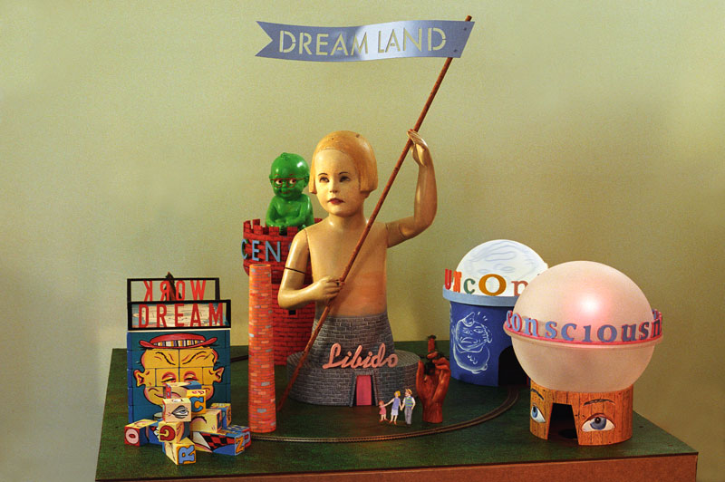
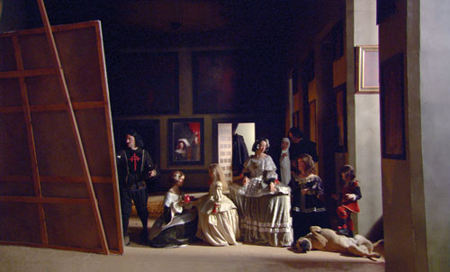

<!doctype html>
<html lang="en">
<head>
	<meta charset="utf-8">
	<meta http-equiv="X-UA-Compatible" content="IE=edge,chrome=1"/>
	<title>More Real? Art in the Age of Truthiness at the Minneapolis Institute of Arts</title>
	<meta name="description" content="'More Real? Art in the Age of Truthiness' features work by 28 of today's most accomplished and promising international artists who explore our shifting experience of reality.">
	<meta name="author" content="">
	<meta name="viewport" content="width=device-width, initial-scale=1, maximum-scale=1">
	
	<!--FB-OG tags-->
	<meta property="og:type" content="article"/>
	<meta property="og:image" content="images/MR-title-green.png"/>
	<meta property="og:title" content="More Real? Art in the Age of Truthiness at the Minneapolis Institute of Arts"/>
	<meta property="og:url" content="http://www.artsmia.org/more-real"/>
	<meta property="og:description" content="'More Real? Art in the Age of Truthiness' features work by 28 of today's most accomplished and promising international artists who explore our shifting experience of reality."/>
	
	<link rel="stylesheet" href="css/reset.css">
	<!-- styles for IE -->
	<!--[if lte IE 9]><link rel="stylesheet" href="css/ie.css" type="text/css" media="screen" /><![endif]-->
	<link rel="stylesheet" href="css/1140.css">
	<link rel="stylesheet" href="css/morereal.css">
	
	<script type="text/javascript" src="js/modernizr.custom.js"></script>
	<script type="text/javascript" src="js/css3-mediaqueries.js"></script>
	
	<!--typekit-->
	<script type="text/javascript" src="http://use.typekit.com/vft0zxk.js"></script>
	<script type="text/javascript">try{Typekit.load();}catch(e){}</script>
	<script type="text/javascript" src="js/foutbgone.js" ></script>
	<script type="text/javascript">fbg.hideFOUT('asap', 400);</script>
	
</head>
<body>
	<div id="MIA_header"><a href="/"></a></div>
	<div class="main container">
		<div class="title row clearfix" id="nav">
			<div class="threecol">
				<ul class="navL">
					<li><a href="#about">About the Exhibition</a></li>
					<li><a href="preview.html">Exhibition Preview</a></li>
				</ul>
			</div>
			<div class="sixcol">
				
				<span class="subhead">ART IN THE AGE OF TRUTHINESS</span>
				<span class="dates">Site Santa Fe July 8, 2012&#8212;January 6, 2013<br />Minneapolis Institute of Arts March 21&#8212;June 9, 2013</span>
			</div>
			<div class="threecol last">
				<ul class="navR">
					<li><a href="#tickets">Tickets</a></li>
					<li><a href="#catalogue">Catalogue</a></li>
				</ul>
			</div>
		</div>
		<div class="row trans_box white_gradient1 clearfix" id="about">
			<h5 class="section-title">About the Exhibition</h5>
			<div class="sixcol">
				<h1>Seeing is Disbelieving</h1>
				<p style="text-indent:4em;">Over the past century, a period of unprecedented technological change and global social upheaval, once agreed-upon beliefs, or &#8220;truths,&#8221; have been cast into doubt, changing and shaping our understanding and experience of reality. <em>More Real? Art in the Age of Truthiness</em> features work by 28 of today's most accomplished and promising international artists, including Ai Weiwei, Vik Muniz and Thomas Demand, who explore our shifting experience of reality.</p>
				<p>This exhibition is organized by the Minneapolis Institute of Arts in partnership with <a href="http://www.sitesantafe.org/">SITE Santa Fe</a>.</p>
				<p>Generous support provided by The Andy Warhol Foundation for the Visual Arts.</p>
				<p>Additional support provided by the <a href="http://artsmia.org/index.php?section_id=446">MIA Contemporary Art Affinity Group</a>, Reid and Ann MacDonald, and &Eacute;tant donn&eacute;s, the French-American Fund for Contemporary Art.</p>
				<p>This project is made possible by a grant from:&#8194;</p>
				<p style="text-align:center;"></p>
			</div>
			<div class="sixcol last">
				<div class="border"></div>
				<p>
					<strong>Zoe Beloff</strong><br />
					<em>Model of Albert Grass's proposed Dreamland amusement park</em>, restored 2009<br />
					Mixed mediums<br />
					Courtesy of the artist
				</p>
				<div class="callout"><span>Tickets for <strong>More Real? Art in the Age of Truthiness</strong> at the Minneapolis Institute of Arts on sale now!</span></div>
			</div>	
		</div>
		<div class="row trans_box white_gradient1 clearfix">
			<div class="sixcol">
				<div>
					<h5 class="section-title">Exhibition Itinerary</h5>
					<p style="text-align:center;">
						<a href="http://www.sitesantafe.org/">SITE Santa Fe</a><br />
						July 8, 2012&#8211;January 6, 2013<br /><br />
						<a href="http://www.artsmia.org/">Minneapolis Institute of Arts</a><br />
						March 21&#8211;June 9, 2013
					</p>
				</div>
			</div>
			<div class="sixcol last">
				<div>
					<h5 class="section-title">Become a Member</h5>
					<div class="callout">
						<span>Become a member and receive free passes for unlimited visits!</span><br />
						<a class="button" href="https://tickets.artsmia.org/public/loader.asp?target=load_screen.asp?screen=mia_membership">Sign up today!</a>
					</div>
				</div>
			</div>	
		</div>
		<div class="row trans_box white_gradient1 clearfix" id="tickets">
			<h5 class="section-title">Tickets</h5>
			<div class="eightcol">
				<div class="border" class="tix-img"></div>
			</div>
			<div class="fourcol last">
				<h2 style="padding:0;">Tickets for <em>More Real? Art in the Age of Truthiness</em> at the Minneapolis Institute of Arts on sale now!</h2>
				<a class="button" href="https://tickets.artsmia.org/public/default.asp?use_more=true&cgCode=6&cgName=Exhibitions">Get Tickets</a>
				<p style="margin:1em 0;padding:0;">
					image:<br />
					<strong>Eve Sussman, Rufus Corporation</strong><br />
					<em>89 seconds at Alazaar</em>, 2004<br />
					Single channel looped video installation<br />
					Collection of Jeanne and Michael L. Klein
				</p>
			</div>	
		</div>
		<div class="row trans_box white_gradient1 clearfix" id="catalogue">
			<h5 class="section-title">Catalogue</h5>
			<div class="sevencol">
				<h2>More Real? Art in the Age of Truthiness</h2>
				<p>A 300-page catalogue accompanies the exhibition and includes essays by Elizabeth Armstrong, Curator of Contemporary Art at the Minneapolis Institute of Arts, and by contributors D. Graham Burnett, of Princeton University; Mark Levy, California State University; Tom Gunning, University of Chicago; Carrie Lambert-Beatty, Harvard University; Norman Klein, California Institute of the Arts; and Glenn Lowry, Museum of Modern Art. The fully-illustrated book also includes an entry about each of the artists featured in the exhibition.</p>
				<p><a class="button" href="http://artsmia-museum-shop.stores.yahoo.net/moreartinage.html">Order Now</a></p>
			</div>
			<div class="fivecol last">
				<div class="border"></div>
			</div>	
		</div>
	</div><!-- container -->
	<nav>
		<ul>
			<li><a class="top" href="#" title="Back to top">Top</a></li>
		</ul>
	</nav>

	<script type="text/javascript" src="http://code.jquery.com/jquery-1.7.2.min.js"></script>
	<script type="text/javascript" src="js/jquery.scrollTo.js"></script>
  	<script type="text/javascript" src="js/jquery.localScroll.js"></script>
  	<script type="text/javascript" src="js/waypoints.min.js"></script>  	
	<script type="text/javascript">;
		$(document).ready(function(){

			$('#nav').localScroll({
				hash:true,
				offset:{top:-60,left:0}
			});
			
			$('.top').addClass('hidden');
			$.waypoints.settings.scrollThrottle = 30;
			$('body').waypoint(function(event, direction) {
				$('.top').toggleClass('hidden', direction === "up");
			}, {
				offset: '-100%'
			}).find('#nav').waypoint(function(event, direction) {
				$(this).parent().toggleClass('sticky', direction === "down");
				event.stopPropagation();
			});
			
			if(window.location.hash) {

				var whatHash = window.location.hash;
				
				if (whatHash=="#about") {
				    $.scrollTo( '#about', 500, {offset:-100} );
				}
				
				if (whatHash=="#tickets") {
				    $.scrollTo( '#tickets', 500, {offset:-100} );
				}
				
				if (whatHash=="#catalogue") {
					$.scrollTo( '#catalogue', 500, {offset:-100} );
				}			
			}
			
			function testCSS(prop) {
    			return prop in document.documentElement.style;
			}

			if ((navigator.appVersion.indexOf("Win")!=-1) && testCSS('MozBoxSizing')){
				$("body").css({
					'text-rendering':'geometricPrecision',
					'font-family' : 'Times New Roman, serif',
					'font-weight' : '100'
					});
			}
			
		});
	</script>
	<!--e-m-i-t-->
	<script src="http://e-m-i-t.org/lib/scripts/jquery-ui-1.7.2.spritely.custom.min.js" type="text/javascript"></script>
	<script src="http://e-m-i-t.org/lib/scripts/jquery.spritely-0.6.1.js"></script>
	<script src="http://e-m-i-t.org/lib/scripts/gravity.js"></script>
	<script src="http://e-m-i-t.org/meeting3/birdsClean/moreRealEngineSimple.js" type="text/javascript"></script> 
	<!--/e-m-i-t--> 	
	<script type="text/javascript">

	  var _gaq = _gaq || [];
	  _gaq.push(['_setAccount', 'UA-32999675-1']);
	  _gaq.push(['_setDomainName', 'artsmia.org']);
	  _gaq.push(['_trackPageview']);
	
	  (function() {
	    var ga = document.createElement('script'); ga.type = 'text/javascript'; ga.async = true;
	    ga.src = ('https:' == document.location.protocol ? 'https://ssl' : 'http://www') + '.google-analytics.com/ga.js';
	    var s = document.getElementsByTagName('script')[0]; s.parentNode.insertBefore(ga, s);
	  })();
	
	</script>
</body></html>